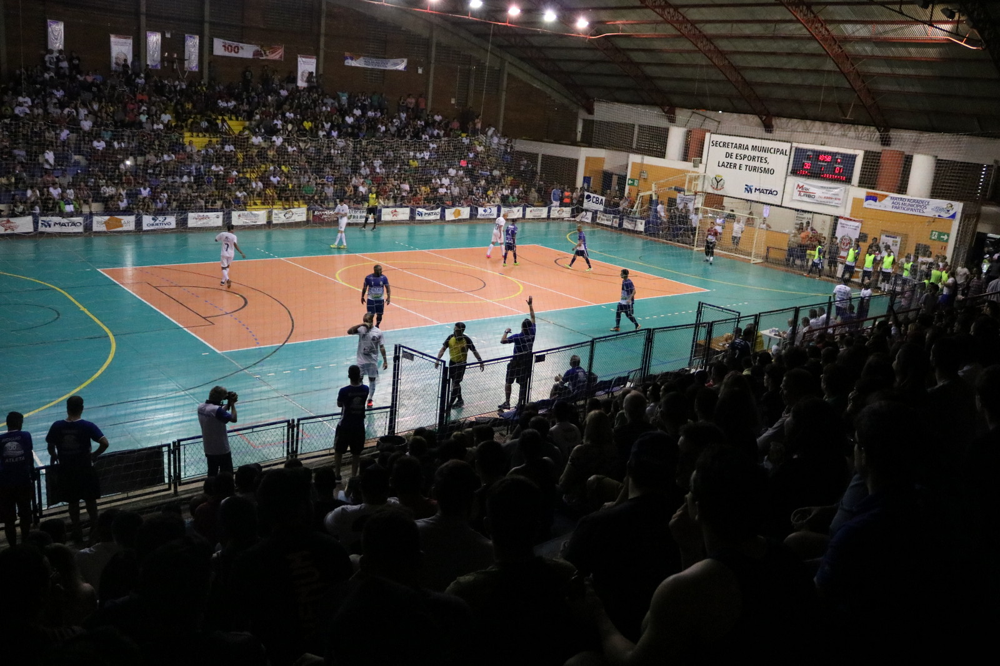
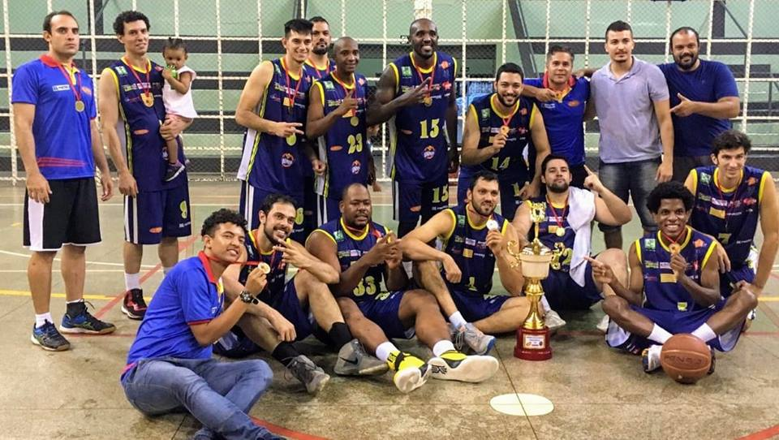

Jogos Regionais 2018.
Tudo começou em 2017 , isto mesmo em 2017 quando a cidade de Barretos ganhou a vaga para candidatura dos jogos de 2018 dos regionais mas entrou em um acordo com a cidade de Matão e entregoua vaga para a cidade que jácomeçou o ano de 2018 com foco em ser muito bem colocado em casa já que no ano anterior teve a conquista de um bronze na cidade de Sertãozinho mas com um gosto amargo após perder um jogo semifinal para o rival Aba Araraquara após muita confusão naquele jogo . Com isso o Smet Matão junto de seu técnico Flávio Lizzeo assumiu a bronnca e quis já no final de 2017 acertar com grandes atletas da região para garantir que jogariam os regionais de Matão já que a maioria do time no ano anterior havia garantido que ficaria para o ano seguinte. Então 2019 começou com ajustes claro no elenco com inclusive acerto com três atletas que tinham sido campeões pela Aba no ano anterior e ja em meados de abril a intensificação dos treinos para a disputa dos jogos em casa .
O ano de 2018 começou e a quadra do ginásio de esportes Déccimo Chiozini precisou de uma reforma e lá o palco de tanta glórias foi reformado para mais uma já que as competições de basquete aconteceriam nela e precisaria de reconhecimento de quadra entre outras coisas na qauadra para que a competição fosse perfeito para a equipe

Os jogos começam
No dia 20 de junho começaram os jogos regionais de Matão co várias modalidades fortes e com tradição pela cidade mas amantes do basquete e o "Deccimo" contavam os dias para o dia 1 de julho que era a estreia e começaria a caminhada de sete dias onde tudo poderia acontecer e começar a contar história era a meta daquele doze homens e um técnico Flavio o técnico , Rafael , Soleira, Wagner ,Pizza,Gorgatt,Danielton,Milhiossi,Leonardo,Gabriel,Jean ,Bruno Vidal, Norberto assim os atletas que disputariam o título com toda a força , estreairam em dia 1 e fizeram um primeiro quarto mágico e ganharam a partida de Barretos de forma facilmente e foi passando de grande forma por todos adversários inclusive um time sem barreiras com alto potencial liderado por Julio ,Leonardo e compania foram grandes jogos .
A equipe Matão ganha nas semifinais da fortíssima equipe do Sesi Franca em casa e faz história indo pra final e tirando Franca das finais pela primeira vez na história
O comércio Franca ,Julho ,6 ,2018 ,
Isso mesmo a equipe de Sesi Franca capital do basquete ficou de fora da final perdendo para Matão e ficando de fora pela primeira vez , foi lindo o ápice do campeonato segundo o técnico e tudo isso graça a dedicação de todos tinha sido quatro jogos at´é em entaão mais nenhum com tamanha importancia e contra Franca msmo comandada por uma equipe de jovens mas smepre com tradição . A semi foi uma jogo lindo bola para os dois lados com todas temáticas de um grande jogo enterradas e liderado por Julio Toledo o Smet fez história e com a torcida a grande surpresa já para um esporte não tão valoriado em nosso país ter tanta torcida gritando em uma comeptição regional foi lindo e marcantes pelos atletas.
A Final
Mesmo com uma campanha já irretocável e histórica ainda faltando aquele algo a mais pra preencher com chave de ouro ,então vinha a final contra a recem formada equipe de Ribeirão Preto que era muito forte com jogadores que jogam a anos e multicampões pela liga regionnal que Matão joga anoe jogadores conhecido e uma ex eestrel da seleção e agora veterano Renato Lamas então foi um jogo disputadissimo onde o primeiro quarto com ginásio loado acabou em derrota para os donos da casa onde so no terceiro quarto conseguiram liderados novamente por Julio eletio por muitos o melhor jogador da competição ele então fez uma enterrada e duas bolas de dois que fizeram a equipe da terra da saudade passar a frente e começar o último quarto emvantagem e também com ajuda de um filho de um ídolo Leonardo filho de Goiano uma lenda do Estoril conhecido por muitos amantes do basquete foi com sua insolencia em bolas de confiança e bolas importantissimas de três que fizeram a equipe de Matão manter a vitória e se sagrar campeâ em um momento mágico e torcida invadindo a quadra naqeule que era o último dia dos jogos regionais do ano sendo terminado com sucesso e muita glórias que só vivendo para saber e sentir
